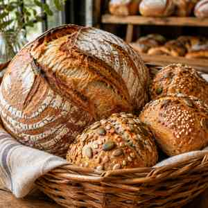

Herzlich willkommen auf unserer Homepage!

Wir freuen uns, Sie auf den Internetseiten der Bäckerei & Café Morgenduft begrüßen zu dürfen. Auf den folgenden Seiten möchten wir Ihnen unseren Betrieb und unser umfangreiches Sortiment etwas näher vorstellen.
Seit über 25 Jahren backen wir täglich frisch für Sie nach alter Tradition. Bei uns finden Sie eine große Auswahl an Brot, Brötchen, Kuchen und Feingebäck. In unserem gemütlichen Café können Sie bei einer Tasse Kaffee verweilen.
Für Bestellungen und Fragen stehen wir Ihnen gerne telefonisch zur Verfügung. Bitte beachten Sie auch unsere aktuellen Angebote.
Unsere Angebote der Woche
| Bauernbrot 1000 g | 3,20 EUR |
| Butterbreze | 1,10 EUR |
| Käsekuchen (Stück) | 2,40 EUR |
| Tasse Kaffee | 1,90 EUR |
Wir wünschen Ihnen viel Spaß beim Stöbern auf unserer Homepage!
Ihr Team der Bäckerei Morgenduft